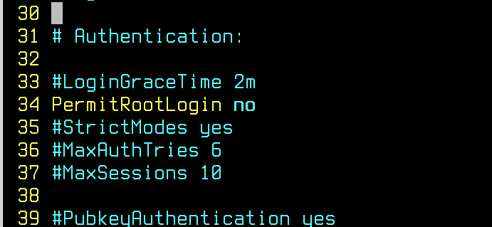
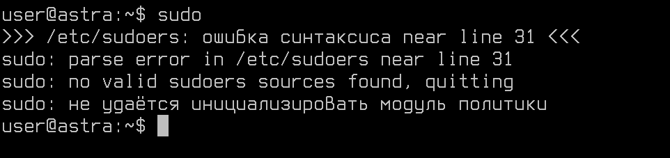
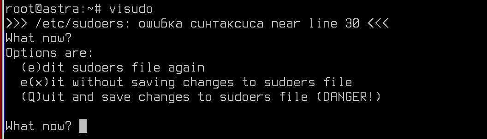
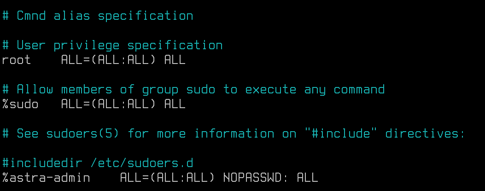
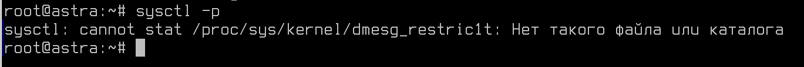

Лабораторная работа №6. Усложнённый материал по итогам видеурока №6.
<---- Обратите внимание на консольный сервер в левой части экрана, вам следует использовать этот сервер для выполнения лабораторной работы
Цель работы
Изучить требования ФСТЭК РФ по безопасной эксплуатации Linux-систем.
Оборудование, ПО:
Виртуальная машина под управлением ОС Astra Linux 1.7 в режиме защищенности "Воронеж".
Ход работы:
Целью данной лабораторной работы является ознакомление с рекомендуемыми настройками ФСТЭК РФ по безопасной эксплуатации несертифицированных Linux-систем на объектах критической инфраструктуры.
Общие сведения о документе
Методический документ от 25 декабря 2022 г. ФСТЭК РФ регулирует настройки и обязательные требования к Linux-дистрибутивам, которые используются в объектах критической инфраструктуры.
К сожалению, или к счастью, но это не значит, что вы можете установить любой Linux-дистрибутив в информационную систему такой инфраструктуры.
Настоящие Рекомендации подлежат реализации в государственных информационных системах и на объектах критической информационной инфраструктуры Российской Федерации, построенных с использованием операционных систем Linux, несертифицированных по требованиям безопасности информации, до их замены на сертифицированные отечественные операционные системы.При этом
Настройка сертифицированных операционных систем на базе ядра Linux осуществляется в соответствии с эксплуатационной документацией разработчиков операционных систем.Это не значит, что инструменты, описанные в данном документе, мы можем не использовать только потому, что работаем на сертифицированной Astra Linux. Знакомиться с этим документом нужно, а также применять его на практике, чтобы по итогу, используя рекомендации как ФСТЭК, так и вендора - получить безопасную и надежную ОС.
Документ разделен на разделы:
- настройка авторизации в операционной системе;
- ограничение механизмов получения привилегий;
- настройка прав доступа к объектам файловой системы;
- настройка механизмов защиты ядра Linux;
- уменьшение периметра атаки ядра Linux;
- настройка средств защиты пользовательского пространства со стороны ядра Linux.
Настройка авторизации в операционных системах Linux
1. Не допускать использование учетных записей с пустыми паролями.
При установке различных программ - например, Apache2 или Nginx, или SSHD. В системе появляется служебный пользователь. По умолчанию, он без пароля и без терминального доступа, но существуют компьютерные атаки, направленные как раз на существование таких "пустых" учетных записей.
Для того чтобы не допустить использование учетных записей пользователей с пустыми паролями в Linux, вам следует выполнить следующие шаги:
- Откройте терминал и войдите в систему под учетной записью с правами администратора.
- Отредактируйте файл /etc/login.defs с помощью текстового редактора. Например, выполните команду:
sudo nano /etc/login.defs - Найдите и измените параметр PASSMINLEN на значение 1 или больше. Этот параметр устанавливает минимальную длину пароля.
PASS_MIN_LEN 1 - Сохраните изменения в файле login.defs и закройте текстовый редактор.
- Обновите файл /etc/shadow командой:
sudo pwconv
Теперь пользователи не смогут установить пустой пароль. Если вы хотите заблокировать учетную запись пользователя, вы можете использовать команду passwd с опцией -l для блокировки:
sudo passwd -l username2. Обеспечить отключение входа суперпользователя по протоколу SSH.
В файле /etc/ssh/sshd_config
3. Запретить использование команды sudo и su
Команда "su" в UNIX-подобных операционных системах (как Linux) используется для переключения пользователя на другого, обычно более привилегированного, например, на суперпользователя (root).
Для ограничения доступа к команде su используется механизм PAM модуля pam_wheel. По умолчанию данный модуль отключен.
Для включения разграничения доступа к команде su по системной группе astra-admin необходимо в файле /etc/pam.d/su изменить строку:
#auth required pam_wheel.soauth required pam_wheel.so group=astra-adminЕсли имя группы имеет пробел, например, domain group, то можно использовать синтаксис:
auth required pam_wheel.so [group=domain group]После этого командой su смогут пользоваться только пользователи группы astra-admin или domain group.
4. Органичить список пользователей, которым разрешен доступ к команде sudo
Команда sudo в UNIX-подобных операционных системах также используется для выполнения команд с повышенными привилегиями, например, от имени суперпользователя (root). Это позволяет пользователям без необходимости входа под суперпользователем выполнять административные задачи.
Информацию о том, кто может использовать команду sudo операционная система хранит в файле - /etc/sudoers и /etc/sudoers.d.
Редактировать данные файлы напрямую, через различные текстовые редакторы - идея плохая, ведь если вы случайно допустите ошибку или опечатку в них, есть риск потерять административный доступ до операционной системы.
Для безопасного редактирования файла используйте команду - visudo.
Рассмотрим на примере, чем редактирование файла /etc/sudoers без специальной команды может быть опасно.
P.S. Не проверять на реальной машине! Это может привести к потере доступа!
vim /etc/sudoersДопустили специальную ошибку, сохраняем и выходим из документа.
И все! Теперь команда sudo недоступна.
А если бы мы работали через visudo?
То система бы сразу предупредила нас о проблемах!
Ладно, на этом "вредные" советы закончились, что у нас с правилами sudo?
По-умолчанию, пользователь root, члены группы sudo и astra-admin имеют полный доступ до команды sudo.
Вы можете это поменять по своему усмотрению, например, если планируется выдать доступ для всех членов доменной группы:
%domain\ admins ALL=(ALL:ALL) ALLВ этом случае, все члены доменной группы Domain Admins получат доступ до этой повышенных привилегий.
А что если мы планируем дать доступ только до определенных команд?
Например,
a-admin-domain ALL=NOPASSWD: /bin/tar, /usr/bin/chownИ вот так, получится выдать доступ до конкретных команд определенным пользователям и группам.
5. Настройка прав доступа к объектам файловой системы
Установить корректные права доступа к файлам настройки пользователей, а именно к файлам с перечнями пользовательских идентификаторов (/etc/passwd) и групп (/etc/group), либо хранилищам хешей паролей (в операционных системах GNU/Linux, Solaris, HP-UX: /etc/shadow, AIX: /etc/security/passwd), с помощью команд:
chmod 644 /etc/passwd;
chmod 644 /etc/group;
chmod go-rwx /etc/shadow.Установить корректные права доступа к системным файлам заданий (конфигурационным файлам) cron при помощи команд:
chmod go-wx /etc/crontab
chmod go-wx /etc/cron.d
chmod go-wx /etc/cron.hourly
chmod go-wx /etc/cron.daily
chmod go-wx /etc/cron.weekly
chmod go-wx /etc/cron.monthly6. Настройка механизмов защиты ядра Linux
Файл sysctl.conf в Linux системах представляет собой конфигурационный файл, используемый для настройки параметров ядра операционной системы, управляемых через sysctl (системный вызов). Этот файл содержит параметры, определяющие различные аспекты поведения ядра, такие как сетевые настройки, настройки безопасности, параметры виртуальной памяти и т. д.
Изменения в sysctl.conf вступают в силу после перезагрузки системы или после применения изменений с помощью команды sysctl -p.
Чтобы внести правки, откройте файл - /etc/sysctl.conf и внесите строчку:
kernel.dmesg_restrict=1Убедиться, что правило написано верно можно с помощью команды:
sysctl -pЕсли в ответ вернется введеная вами строка - вы сделали все правильно. Если была бы ошибка, то вывод команды был следующим:
И стоит сказать, что далее почти весь документ ФСТЭК РФ посвящен именно вопросу настройки файла sysctl.conf.
Если подводить итог, зачем данный файл необходим, то можно прийти к следующим выводам:
- Настройка параметров ядра: С помощью файлов sysctl.conf можно устанавливать и изменять параметры, которые касаются работы ядра Linux, такие как максимальное количество открытых файлов, размер буфера памяти и другие системные настройки. Конфигурирование этих параметров может помочь оптимизировать работу системы и обеспечить ее более эффективную работу.
- Контроль сетевых параметров: Sysctl.conf также позволяет настраивать параметры сети, такие как размеры буферов, TTL (время жизни) пакета и другие сетевые настройки. Это позволяет управлять сетевыми ресурсами и обеспечить более безопасную и эффективную работу в сетевой среде.
- Обеспечение безопасности: Помимо параметров ядра и сети, sysctl.conf также может быть использован для повышения безопасности системы. Настройка различных параметров позволяет усилить защиту операционной системы от возможных угроз и атак. Например, можно изменить параметры, связанные с отслеживанием IP пакетов, настройкой IPv6, включением и отключением различных механизмов безопасности.
После завершения работы, для проверки выполнения работ - выполните команду
checker_new_system6